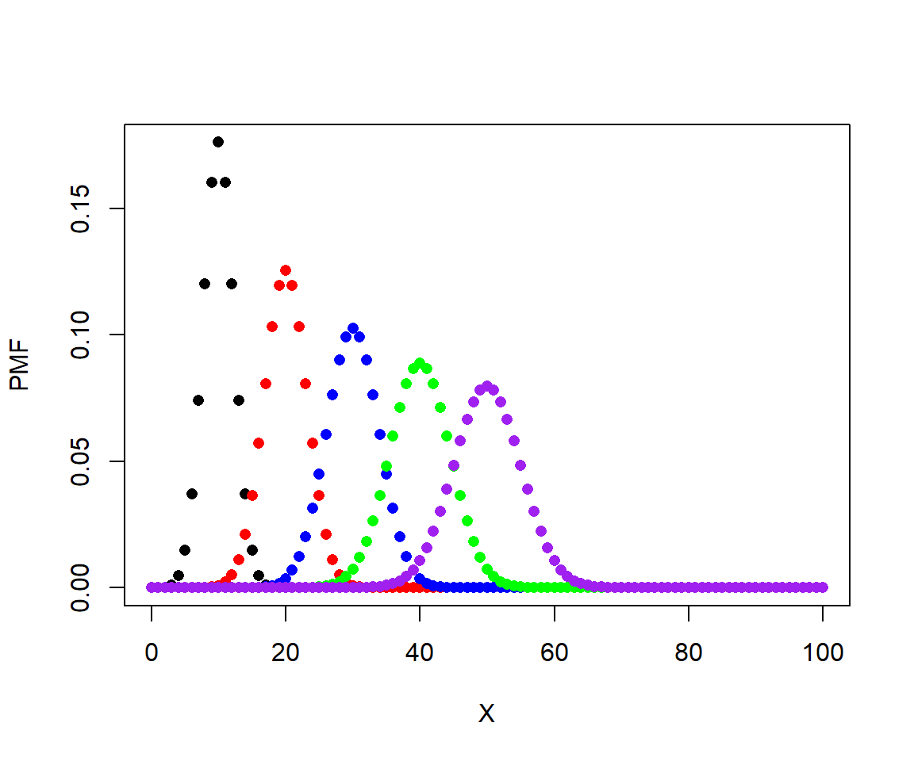
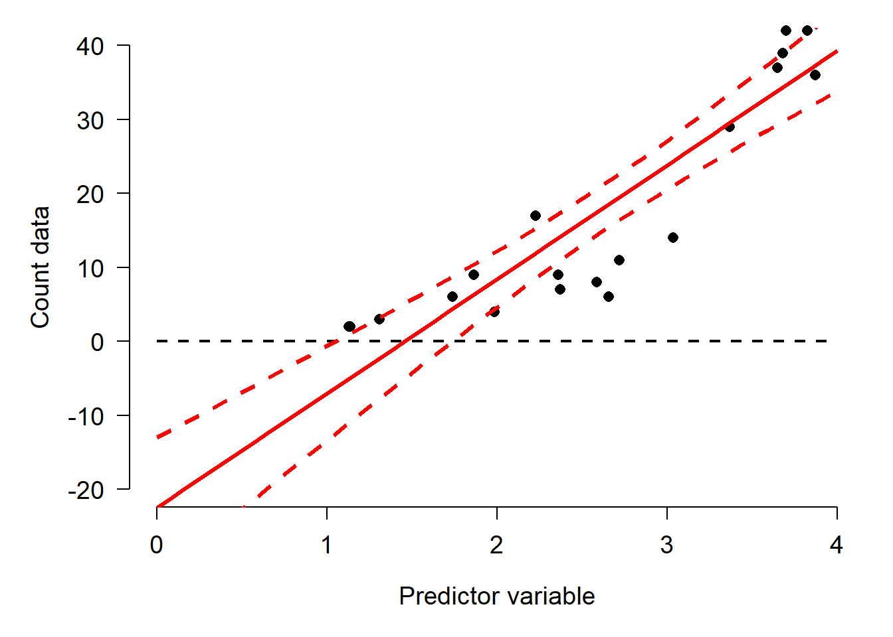
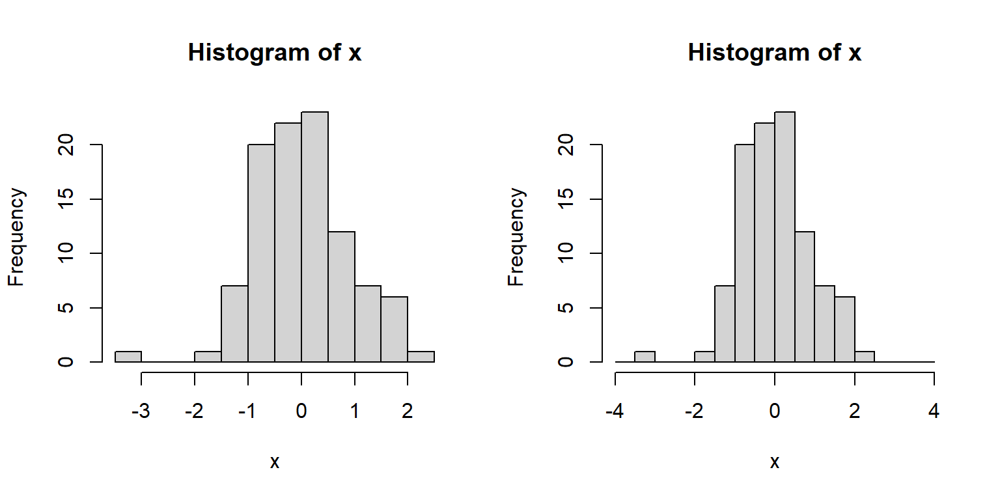
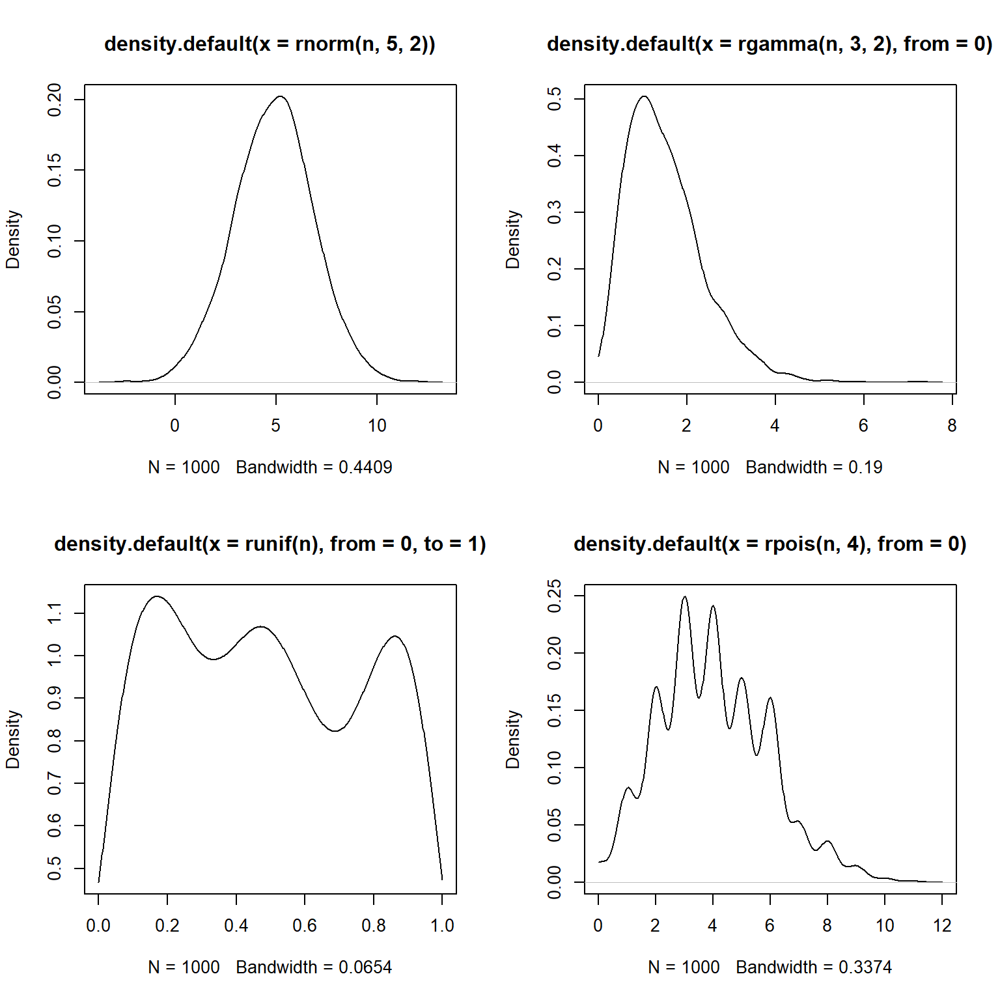
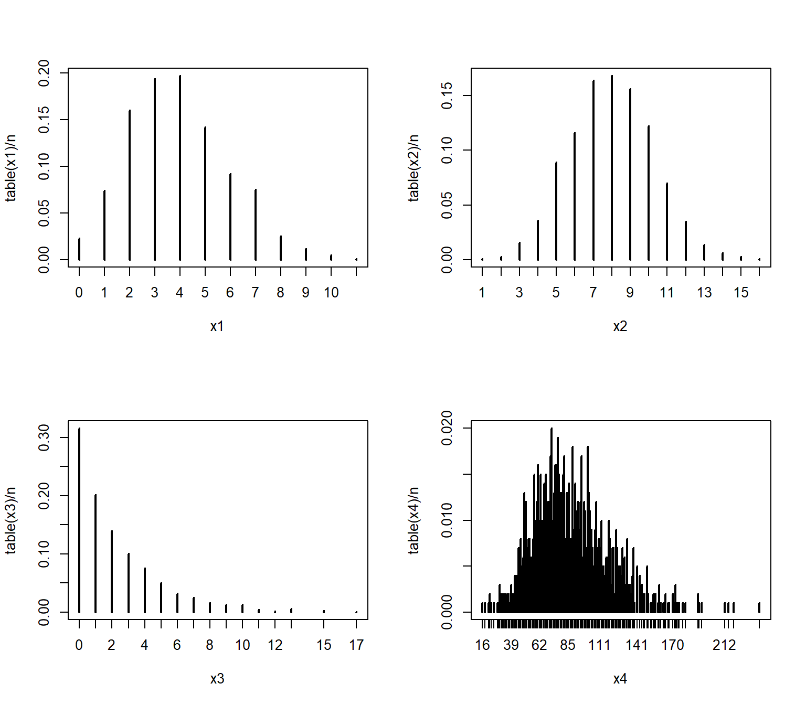
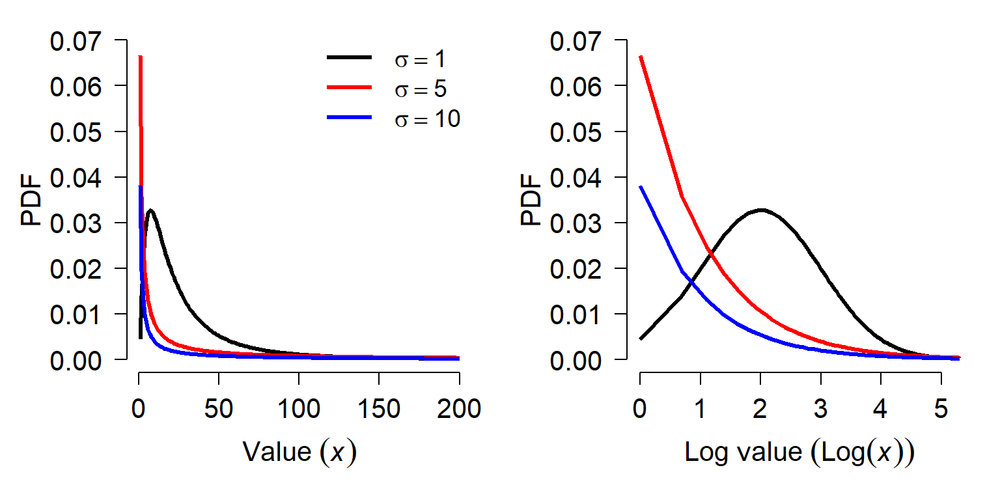
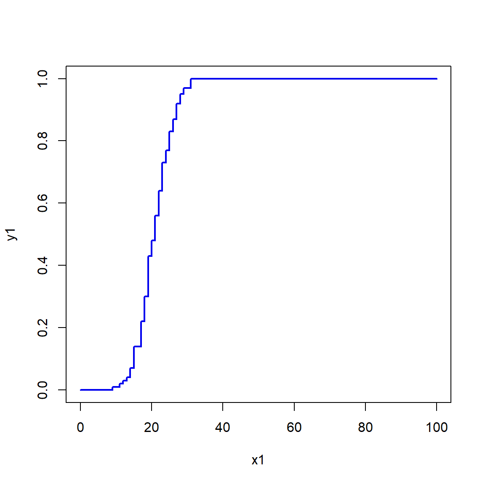
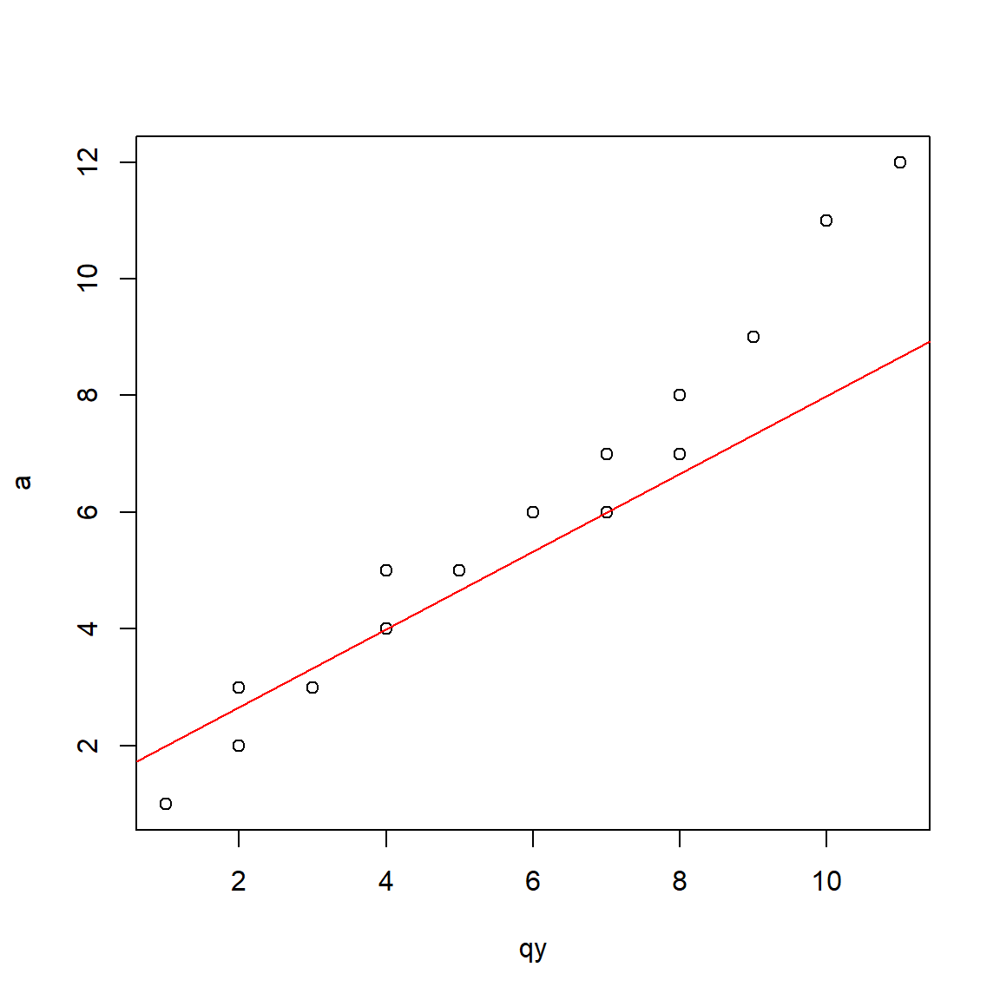

4.3 Statistical distributions
All data contain some element of randomness. Understanding the nature and consequences of that randomness is what motivates much of modern statistics. Probability distributions are the mathematical constructs that describe randomness in statistics. This page describes some probability distributions commonly encountered in biology (and a few that aren’t common). The emphasis here is on practical understanding of what a the distributions imply about data–not on the theoretical underpinnings or mathematical details. If you want or need a rigorous introduction to probability theory, this is probably not the right place.
4.3.1 Probability distributions
All data contain some element of randomness. Understanding the nature and consequences of that randomness is what motivates much of modern statistics. Consider the figures below:

Both scatterplots show a linear relationship between X and Y. But what is different about the plot on the right? Variation. Both plots show the same relationship (\(Y=22+1.4X\)), but they differ in that the variation about the expected value (the red line) is much greater in the right plot than the left plot. Consequently, X appears to explain much more variation in Y in the left plot than in the right plot. The next figure shows that the residual variation, or difference between the expected and observed values, is much greater in the right panel. Each of these differences between the observed value of Y (\(Y_i\)) and the expected value of Y (\(E(Y_i)\)), or \(Y_i-E(Y_i)\), is called a residual.

Residuals are an important part of statistical analysis for two reasons. First, most statistical models make assumptions about the distribution of residuals. Second, the total magnitude of the residuals (usually expressed as sum of squared residuals) is useful for calculating many measures of how well a model fits the data. The residuals of a statistical model are the differences between the observed values and the values predicted by the model. The residual for observation i in variable Y, \(R_i\), is calculated as:
\[R_i=Y_i-E\left[Y_i\right]\]
where \(E(Y_i)\) is the expected value of \(Y_i\). This means that when an observation has a greater value than predicted, the residual is positive; similarly, when an observation is smaller than expected, the residual is negative. In many statistical methods, residuals are squared so that (1) positive and negative residuals do not cancel out; and (2) larger residuals carry more weight.
The figures below show the distributions of residuals for the example linear regressions above. Notice that the left dataset has a much smaller distribution of residuals than the right dataset. This is because of the much tighter fit of the left dataset’s Y values to the predicted curve.

Notice also that both distributions of residuals have a similar shape, despite the difference in width. This shape is actually very important: the normal distribution. If the residuals were not distributed this way (i.e., did not follow a normal distribution), then we would be in trouble for two reasons. First, the data were generated using a normal distribution for residuals, so something would have had to have gone wrong with our statistical test; and second, the linear regression model used to analyze the data assumes that residuals are normally distributed. If they are not, then the test is not going to produce valid estimates of statistical significance or model parameters.
The example above is an example of the importance of thinking about statistical distributions when analyzing data. So just what is a statistical distribution? Distributions are mathematical functions that define the probabilities of random outcomes. Here random means that there is some element of chance in what we observe. This randomness is not completely unpredictable. While the outcome of specific observations might be unknowable, we can make predictions about long run frequencies or averages of lots of observations. In other words, single observations are not predictable, but the properties of sets of observations are. Such properties might include the number of times a specific outcome occurs (e.g., number of times a flipped coin comes up heads) or some summary of observations (e.g., the mean tail length of chipmunks). Another term for this kind of randomness that follows a pattern is stochastic.
Another example: coin flips
Consider flipping a coin. A fair coin will come up “heads” 50% of the time, and “tails” the other 50%. If you flip a coin once, the probability of getting heads is 50%. But what about if you flip the coin 10 times? How many heads should you get? 5 is a reasonable guess. The table below shows the possible outcomes to 10 coin flips:
| Heads | Tails |
|---|---|
| 0 | 10 |
| 1 | 9 |
| 2 | 8 |
| 3 | 7 |
| 4 | 6 |
| 5 | 5 |
| 6 | 4 |
| 7 | 3 |
| 8 | 2 |
| 9 | 1 |
| 10 | 0 |
This table shows that 5 heads is only one of 11 possibilities! So, is the probability of 5 heads 1 in 11 (\(\approx\) 0.091)? Of course not, because not all outcomes are equally likely.
One of the reasons statistics is so fun is that we can often use simulation to discover patterns. The R code below will simulate the effects of flipping 1 coin 10 times. Run this code a few times and see what happens.
rbinom(1,10,0.5)## [1] 4A typical run of results might be something like 4 5 5 4 3 5 6 6 5 5 4 6. We can repeat this line many times and graph the results:
x <- numeric(20)
for(i in 1:20){x[i] <- rbinom(1,10,0.5)}
plot(table(x))
There is actually a faster way, by requesting 20 draws of 10 flips each all at once:
x <- rbinom(20,10,0.5)
plot(table(x))
Is 5 the most likely value? What about if we get a larger sample?
x1 <- table(rbinom(10,10,0.5))
x2 <- table(rbinom(100,10,0.5))
x3 <- table(rbinom(1000,10,0.5))
x4 <- table(rbinom(10000,10,0.5))
x5 <- table(rbinom(100000,10,0.5))
x6 <- table(rbinom(1000000,10,0.5))
par(mfrow=c(2,3))
plot(x1, xlim=c(0, 10), main="n = 10")
plot(x2, xlim=c(0, 10), main="n = 100")
plot(x3, xlim=c(0, 10), main="n = 1000")
plot(x4, xlim=c(0, 10), main="n = 10000")
plot(x5, xlim=c(0, 10), main="n = 100000")
plot(x6, xlim=c(0, 10), main="n = 1000000")
# reset graphical parameters
par(mfrow=c(1,1))You may have guessed by now that the properties of a set of coin flips—such as what number of heads to expect—are described by some kind of mathematical idea. This idea is called a statistical distribution. This particular distribution is the binomial distribution, which describes the outcome of any random process with a binary outcome. The name “binomial” is descriptive: “bi” for two, and “nomial” for names or states. Can you think of a biological situation where the binomial distribution might apply?
The sections below describe some distributions commonly encountered in biology, and what kinds of processes give rise to them. It is important to be able to relate biological phenomena to statistical distributions, because the underlying nature of the randomness in some process can affect how we analyze that process statistically. Note that in this class we will focus on the practical applications of these distributions, rather than their mathematical derivations.
4.3.2 Probability distributions in R
Every distribution supported in R has four functions associated with it: r__(), q__(), d__(), and p__() , where __ is the name of the distribution (or an abbreviation thereof). These 4 functions calculate different values defined by the distribution:
r__()draws random numbers from the distribution.p__()calculates the cumulative distribution function (CDF) at a given value. The reverse ofq__().d__()calculates the probability density function (PDF); i.e., the height of the density curve, or first derivative of the CDF.q__()calculates the value at a given quantile. The reverse ofp__().
The figure below shows these functions in relation to the PDF and CDF for a normal distribution.

4.3.3 Discrete distributions
Discrete distributions can take on integer values only. Because of this, many discrete distributions are related in some way to count data. Count data result from, well, counting things. Count data can also describe the number of times something happened.
4.3.3.1 Bernoulli distribution
The simplest discrete distribution is the Bernoulli distribution. It describes the outcome of a single random event with probability p. Thus, the Bernoulli distribution takes the value 1 with probability p or the value 0 with probability \(q=(1-p)\). Any opportunity for the event to happen is also called a Bernoulli trial, and the process that it describes a Bernoulli process. The probability p can take on any value in the interval [0, 1].
For convenience we usually consider a Bernoulli distribution to take the value of 0 or 1, but really it could represent any binary outcome. For example, yes vs. no, dead vs. alive, < 3 vs. \(\ge\) 3, etc., are all outcomes that could be modeled as Bernoulli variables. By convention, the event that occurs with probability p is considered a success and has the numerical value 1; the even that occurs with probability 1-p is considered a failure and takes the numerical value 0. This is how Bernoulli variables are represented in most statistical packages, including R.
The Bernoulli distribution is rarely used on its own in an analysis34. Instead, it’s useful to think of the Bernoulli distribution as a special case of, or a building block of, more complicated distributions such as the binomial distribution. For example, a single observation of a binomially-distributed variable could be thought of as a Bernoulli distribution.
The Bernoulli distribution is a special case of the binomial distribution, and so it is accessed in R using the functions associated with the binomial. With the size argument set to 1, the binomial distribution is the Bernoulli distribution.
# flip one fair coin
rbinom(1, 1, 0.5)## [1] 0# flip 10 fair coins
rbinom(10, 1, 0.5)## [1] 1 1 0 1 1 0 1 0 1 1# flip 10 coins with a 70% chance of heads
rbinom(10, 1, 0.7)## [1] 0 1 1 0 1 1 0 0 0 14.3.3.2 Binomial distribution
The binomial distribution describes the number of successes in a set of independent Bernoulli trials. Each trial has probability of success p, and there are n trials. The values n and p are the parameters of the binomial distribution–the values that describe its behavior. The coin flipping example above is an example of a binomial distribution. Biological examples of binomial processes might be the number of fish that die in an experiment, or the number of plants that flower in a season.
Because it is so simple, thinking about the binomial distribution is a good warm up for learning about the characteristics of probability distributions. One of the most important characteristics is the expected value of the distribution. This is the value that most likely to occur, or the central tendency of values. There are several kinds of expected value, but they are all related to the most common or central value. The expected value, or mean, of a binomial distribution X is
\[E\left(X\right)=\mu=np\]
This is the answer to the question earlier about how many heads to expect if a fair coin is flipped 10 times:
\[E(heads)=n(flips)p(heads)\]
If a variable comes from a binomial process, we can make other inferences about it. For example, we can estimate its variance as:
\[Var\left(X\right)=\sigma^2=np(1-p)=npq\]
We can also estimate the probability of any number of successes k as:
\[P\left(k\right)=\left(\begin{matrix}n\\k\\\end{matrix}\right)p^k\left(1-p\right)^{n-k}\]
The first term (n over k) is known as the binomial coefficient and is calculated as:
\[\left(\begin{matrix}n\\k\\\end{matrix}\right)=\frac{n!}{k!\left(n-k\right)!}\]
This term represents the number of ways of seeing k successes in n trials. For example, a set of 4 trials could have 2 successes in 6 ways: HHTT, HTHT, THHT, HTTH, THTH, and TTHH.
When n is small, the binomial distribution can be quite skewed (i.e., asymmetric) because the distribution has a hard lower bound of 0. Note that the expression for \(P(k)\) is what is calculated by function dbinom() below, and related to what is calculated by function pbinom(). For large n, the binomial distribution can be approximated by a normal distribution (see below) with mean = np and variance = npq.
4.3.3.2.1 Binomial distribution in R
R uses a family of 4 functions to work with each probability distribution. The binomial and Bernoulli distributions are accessed using the _binom group of functions: dbinom(), pbinom(), qbinom(), and rbinom(). Each function calculates or returns something different about the binomial distribution:
dbinom(): Calculates probability mass function at x for binomial distribution given n and p. Answers the question “What is the probability of x successes in n trials with probability p?”pbinom(): Calculates integral of the probability mass function for a binomial distribution given n and p, from 0 up to x. In other words, given some binomial distribution, at what quantile of that distribution should some value fall? The reverse ofqbinom(). Answers the question “What is the probably of at least x successes in n trials with probability p?”qbinom(): Calculates the value at specified quantile of a binomial distribution. Essentially the reverse ofpbinom().rbinom(): Draws random numbers from the binomial distribution defined by n and p (or from the Bernoulli distribution if n = 1).
Let’s explore the binomial distribution using these functions. In the plots produced in the two examples, notice how the variance of each distribution (x1, x2, etc.) depends on both n and p. The variance in these plots is shown by the width of the distribution.
# N = 100, P various
N <- 100
X <- 0:100
x1 <- dbinom(X, N, 0.2)
x2 <- dbinom(X, N, 0.4)
x3 <- dbinom(X, N, 0.6)
x4 <- dbinom(X, N, 0.8)
par(mfrow=c(1,1))
plot(X, x1, pch=16, xlab="X", ylab="PMF")
points(X, x2, pch=16, col="red")
points(X, x3, pch=16, col="blue")
points(X, x4, pch=16, col="green")
Here is a plot showing the effect of varying n.
# P = 0.5, N various
P <- 0.5
x1 <- dbinom(0:100, 20, P)
x2 <- dbinom(0:100, 40, P)
x3 <- dbinom(0:100, 60, P)
x4 <- dbinom(0:100, 80, P)
x5 <- dbinom(0:100, 100, P)
plot(0:100, x1, pch=16, xlab="X", ylab="PMF")
points(0:100, x2, pch=16, col="red")
points(0:100, x3, pch=16, col="blue")
points(0:100, x4, pch=16, col="green")
points(0:100, x5, pch=16, col="purple")
In these plots, the height of the points is called the probability mass function (PMF). For discrete distributions like the binomial, the PMF of any value is the probability that the distribution takes on that value. The sum of the PMF for all integers from 0 to n (inclusive) must be equal to 1. You can verify this by calculating the sum of any of the vectors of densities above.
The function pbinom() sums the PMF from 0 up to and including some value. In other words, it calculates the cumulative distribution function (CDF). This answers the question “where in the distribution is value x?”; put another way, “at what quantile of the distribution does value x lie?”. Yet another way to ask this is, “What is the probability of at least X successes?”.
Consider a binomial distribution with n = 10 and p = 0.5. What is the probability that the distribution takes a value \(\le\) 7? We can calculate this as the sum of the PMF for 0 through 7.
# plot the distribution to see it
N <- 10
P <- 0.5
xd <- dbinom(0:10, N, P)
plot(0:10, xd, type="h", xlab="X", ylab="PMF")
# calculate p(x<=7)
sum(xd[1:8]) # indices 1:8 correspond to values 0:7## [1] 0.9453125# same value:
pbinom(7, N, P)## [1] 0.9453125Or, we could want to know the probability that the distribution takes on a value > 6. This would be the complement of the sum up to and including 6.
1-sum(xd[1:7])## [1] 0.171875# same value:
1-pbinom(6,N,P)## [1] 0.171875If the last two calculations seem familiar, that’s because this is exactly how P values for statistical tests are calculated (e.g., using pf() to get the probability from an F distribution for an ANOVA).
The function qbinom() is basically the reverse of function pbinom(). Rather than calculate the quantile at which a value falls in the distribution, qbinom() calculates the value at which a quantile falls. For example, what value do we expect to find at the 60th percentile of a distribution? Put another way, how many successes should 60% of experiments have, on average? The example below shows how qbinom() and pbinom() are reversible.
N <- 10
P <- 0.5
pbinom(6, N, P)## [1] 0.828125qbinom(0.828125, N, P)## [1] 6Finally, rbinom() draws random values from the binomial or Bernoulli distributions. The syntax of this function can be a little confusing. The first argument, n, is the number of random draws that you want. The second argument, size, is the number of values in each draw; that is, the parameter n of the binomial distribution. Compare these results, all with p = 0.5:
# 1 draw of 1 trial
rbinom(1, 1, 0.5)## [1] 0# 1 draw of 10 trials
rbinom(1, 10, 0.5)## [1] 8# 10 draws of 1 trial per draw
rbinom(10, 1, 0.5)## [1] 0 0 1 0 1 1 1 0 1 0# 10 draws of 10 trials per draw
rbinom(10, 10, 0.5)## [1] 3 5 5 7 3 5 5 5 4 3Result 1 shows a Bernoulli distribution with n = 1. Result 2 shows a single value from a binomial distribution with n = 10. Result 3 shows 10 results from Bernoulli distributions. Notice that if you add up the values in result 3, you get a result like Result 2. Finally, Result 4 shows 10 draws from a binomial distribution, which itself has n = 10. The take home message is that the first argument to rbinom() is not a parameter of the binomial distribution. It is instead the number of draws from the distribution that you want. The size parameter is the argument that helps define the distribution.35
4.3.3.3 Poisson distribution
The Poisson distribution is widely used in biology to model count data. If your data result from some sort of count or abundance per time interval, spatial extent, or unit of effort, then the Poisson distribution should be one of the first things to try in the analysis. The Poisson distribution has one parameter, \(\lambda\) (“lambda”), which represents the expected number of objects counted in a sample (objects being trees, fish, cells, mutations, kangaroos, etc.). This parameter is also the variance of the distribution.
Like the binomial distribution, the Poisson distribution is discrete, meaning that it can only take on integer values. Unlike the binomial distribution, which is bounded by 0 and n, the Poisson distribution is bounded by 0 and \(+\infty\). However, values \(\gg \lambda\) are highly improbable. If there is a well-defined upper bound for your count, then you might consider them to come from a binomial distribution instead of a Poisson. For example, if you are counting the number of fish in a toxicity trial that survive, the greatest possible count is the number of fish in the trial. On the other hand, if your counts have no a priori upper bound, then use the Poisson.
The expected value and the variance of the Poisson distribution are both \(\lambda\):
\[E\left(X\right)=Var\left(X\right)=\lambda\]
4.3.3.3.1 Poisson distribution in R
The Poisson distribution is accessed using the _pois group of functions, where the space could be d, p, q, or r. These functions calculate or returns something different:
dpois(): Calculates probability mass function (PMF) at x for Poisson distribution given \(\lambda\). Answers the question, “what is the probability of observing a count of x given \(\lambda\)?”ppois(): Calculates CDF, or integral of PMF, from 0 up to x given \(\lambda\). In other words, given some Poisson distribution, at what quantile of that distribution should some value fall? The reverse ofqpois().qpois(): Calculates the value at specified quantile of a Poisson distribution. The reverse ofppois().rpois(): Draws random numbers from the Poisson distribution defined by \(\lambda\).
Something important to keep in mind about the Poisson distribution is that it only makes sense for discrete counts, not for continuous measurements that are rounded. For example, if you are measuring leaf lengths and round every length to the nearest mm, it might be tempting to use a Poisson distribution to analyze the data because all of the values are integers. But that would be incorrect, because leaf lengths could theoretically take on any positive value. Furthermore, treating rounded continuous values as discrete leads to the awkward issue that changing measurement units can change dimensionless statistics.
For example, the coefficient of variation (CV) is the ratio of a distribution’s SD to its mean. Thus, it is unitless and should be independent of units. The CV of a Poisson distribution X is:
\[CV\left(X\right)=\frac{\sqrt\lambda}{\lambda}\]
So, if you measured 20 leaves and found a mean length of 17 cm, the CV would thus be \(\approx\) 0.242 or 24%. But if you convert the measurements to mm, the CV would be about 0.077, or 7.7%! (In fact, if you change \(\lambda\) by some factor a, then the CV will be scaled by \(\sqrt a/a\)).
The figure below shows the effect of varying \(\lambda\) on a Poisson distribution.
x <- 0:40
lams <- c(1,5, 10, 20)
nlams <- length(lams)
dlist <- vector("list", nlams)
for(i in 1:nlams){dlist[[i]] <- dpois(x, lams[i])}
cols <- rainbow(nlams)
par(mfrow=c(1,1), mar=c(5.1, 5.1, 1.1, 1.1),
las=1, bty="n", lend=1,
cex.lab=1.3, cex.axis=1.3)
plot(x, dlist[[1]], ylim=c(0, max(sapply(dlist, max))),
type="n", ylab="PMF", xlab="Value (x)")
for(i in 1:nlams){
points(x, dlist[[i]], pch=16, cex=1.3,
col=cols[i])
}
legend("topright", legend=lams,
pch=16, pt.cex=1.3, col=cols, bty="n", cex=1.3,
title=expression(lambda))
4.3.3.4 Negative binomial distribution
The negative binomial distribution has two common definitions. The original defintion is as the number of failures that occur in a series of Bernoulli trials until some predetermined number of successes is observed. For example, when flipping a fair coin, how many times should you expect to see tails before you observe 8 heads? The second definition is as an alternative to the Poisson distribution when variance is not equal to the mean36. This makes the negative binomial a bit of an odd duck in biological data analysis because it is defined in terms of one distribution, but used as an alternate version of another. The traditional definition of the negative binomial distribution is what names the negative binomial.
Biologists often use the second definition as an overdispersed alternative to the Poisson distribution. Overdispersed means that a distribution has a variance greater than expected given other parameters. This is very common in biological count data. For example, a bird species might have low abundance (0 to 4) at most sites in a study, but very high abundance (30 to 40) at a handful of sites. In that case using the Poisson distribution would not be appropriate because doing so would imply that the variance \(\lambda\) was greater than the mean (also \(\lambda\)); in other words, that \(\lambda > \lambda\).
The version of the negative binomial that biologists use is parameterized by its mean \(\mu\) and its overdispersion k. This definition views the negative binomial as a Poisson distribution with parameter \(\lambda\), where \(\lambda\) itself is a random variable that follows a Gamma distribution (see below). For this reason, some authors refer to the negative binomial as a Gamma-Poisson mixture distribution. A mixture distribution is exactly what it sounds like: a distribution that is formed by “mixing” or combining two distributions. Usually this manifests as having one or more parameters of one distribution vary as another distribution.
The overdispersion parameter k is called size in the R functions that work with the negative binomial. Counterintuitively, the overdispersion in a negative binomial distribution gets larger as k becomes smaller. This is seen in the expression for the variance of a negative binomial distribution:
\[Var\left(X\right)=\mu+\frac{\mu^2}{k}\]
As k becomes large, the ratio \(\mu^2/k\) becomes small, and thus \(Var(x)\) approaches \(\mu\). This means that a negative binomial distribution with large k approximates a Poisson distribution. As k approaches 0, the ratio \(\mu^2/k\) becomes larger, and thus \(Var(x)\) increases to be much larger than \(\mu\).
4.3.3.4.1 Negative binomial distribution in R
The negative binomial distribution is accessed using the _nbinom group of functions, where the space could be d, p, q, or r. These functions calculate or returns something different:
dnbinom(): Calculates PMF at x. Answers the question, “what is the probability of observing a count of x?”pnbinom(): Calculates CDF, or integral of PMF, from 0 up to x. In other words, given some negative binomial distribution, at what quantile of that distribution should some value fall? The reverse ofqnbinom().qnbinom(): Calculates the value at specified quantile of a Poisson distribution. The reverse ofpnbinom().rnbinom(): Draws random numbers from the negative binomial distribution.
The R functions for the negative binomial distribution can work with either parameterization (waiting time or mean with overdispersion). Some of the argument names are used for both methods. If you are working with the negative binomial distribution in R you need to name your arguments to make sure you get the version of the negative binomial that you want.
The figure below show the effect of different overdispersion parameters. Notice that as k increases, the distribution looks more and more like a Poisson distribution with \(\lambda = 10\). As k gets smaller, the distribution gets more and more concentrated near 0, and more and more right-skewed.
xp <- 0:30
y1 <- dpois(xp, 10)
y2 <- dnbinom(xp, size=0.2, mu=10)
y3 <- dnbinom(xp, size=0.5, mu=10)
y4 <- dnbinom(xp, size=1, mu=10)
y5 <- dnbinom(xp, size=10, mu=10)
y6 <- dnbinom(xp, size=50, mu=10)
y7 <- dnbinom(xp, size=100, mu=10)
cols <- rainbow(6)
par(mfrow=c(1,1), mar=c(5.1, 5.1, 1.1, 1.1),
las=1, bty="n", lend=1,
cex.lab=1.3, cex.axis=1.3)
plot(xp, y1, pch=17, ylim=c(0, 0.5), xlab="X", ylab="PMF")
points(xp, y2, pch=16, col=cols[1])
points(xp, y3, pch=16, col=cols[2])
points(xp, y4, pch=16, col=cols[3])
points(xp, y5, pch=16, col=cols[4])
points(xp, y6, pch=16, col=cols[5])
points(xp, y7, pch=16, col=cols[6])
legend("topright",
legend=c("Poisson", "k=0.2", "k=0.5", "k=1", "k=10",
"k=50", "k=100"),
pch=c(17, rep(16,6)), col=c("black", cols))
4.3.3.5 Geometric distribution
The geometric distribution describes the number of Bernoulli trials that are seen before observing a single failure. It is thus related to the binomial and negative binomial. In fact, the geometric distribution is a special case of the negative binomial, with the number of successes = 1.
The geometric distribution arises in biology when modeling waiting times or life spans. For example, the number of years that an individual organism lives, if it has a constant probability of surviving each year. Or, the number of generations until a mutation in a cell line occurs, if mutations occur at a constant rate per generation.
Imagine a fish that has a 5% chance of dying each year; i.e., a 95% annual survival rate. How long should we expect this fish to live, on average?
P <- 0.05
X <- 0:100
Y <- dgeom(X, P)
plot(X,Y)
The figure shows that the probability of living to any given age falls off quickly at first, then more gradually as time goes on. What is the mean life expectancy?
qgeom(0.5, P)## [1] 13What range of life expectancies can we expect for 95% of the population?
qgeom(c(0.025, 0.975), P)## [1] 0 71That’s quite a wide range! What is the probability that a fish lives to be at least 30 years old? 40 years old?
1-pgeom(30, P)## [1] 0.20390681-pgeom(40, P)## [1] 0.12208654.3.3.6 Beta-binomial distribution
The beta-binomial distribution is a mixture that allows for modeling binomial processes with more variation than would be expected from a garden variety binomial distribution. The beta-binomial is a binomial distribution, but with the probability parameter p itself varying randomly according to a beta distribution (see below). This is similar to how a negative binomial distribution can be defined as a Poisson distribution mixed with a gamma distribution (with the Poisson \(\lambda\) varying as a gamma variable).
A beta-binomial distribution X is given by:
\[X \sim Bin\left(n,\ p\right)\]
\[p \sim Beta\left(\alpha,\beta\right)\]
The parameters of the beta distribution are positive shape parameters (see below). The parameters of the beta part of the beta-binomial distribution can make the binomial part overdispersed relative to an ordinary binomial distribution.
4.3.3.7 Multinomial distribution
The multinomial distribution is a generalization of the binomial distribution to cases with more than 2 possible outcomes. For example, rolling a 6-sided die many times would yield a distribution of outcomes (1, 2, 3, 4, 5, or 6) described by the multinomial distribution. The multinomial distribution is parameterized by the number of possible outcomes k, the number of trials n, and the probabilities of each outcome \(p_1, \ldots, p_k\). The probabilities must sum to 1.
There are some special cases of the multinomial distribution:
- When k = 2 and n = 1, the multinomial distribution reduces to the Bernoulli distribution
- When k = 2 and n > 1, the multinomial distribution reduces to the binomial distribution
- When k > 2 and n = 1, the multinomial distribution is the categorical distribution.
The example below shows how to work with the multinomial distribution in R.
# define 2 different sets of probabilities for
# 5 different outcomes
p1 <- c(0.2, 0.2, 0.1, 0.1, 0.4)
p2 <- c(0.1, 0.2, 0.4, 0.2, 0.1)
# sample from the multinomial distribution
N <- 1e3
r1 <- rmultinom(N, N, prob=p1)
r2 <- rmultinom(N, N, prob=p2)
# summarize by outcome
y1 <- apply(r1, 1, mean)
y2 <- apply(r2, 1, mean)
# plot the results
plot(1:5, y1, pch=16, xlab="X",
ylab="Frequency", ylim=c(0, 1000))
points(1:5, y2, pch=16, col="red")
4.3.4 Continuous distributions
A continuous distribution can take an infinite number of values. These values can come from an interval on the real line, or the entire real line. Contrast this to a discrete distribution, which can only take on integer values. Computing the probability of any possible outcome of a discrete distribution is relative straightforward because there are a limited number of outcomes. For example, a binomial distribution with n = 10 and p = 0.5 has only 11 possible outcomes (0, 1, 2, …, 9, or 10). The probabilities \(p(0)\), \(p(1)\), …, \(p(10)\) must all sum to 1. The probability mass function (PMF) of the binomial distribution at any value is the probability of that value occurring.
This leads to an interesting question. How could we calculate the probability of any given outcome of a continuous distribution? If the probabilities of each individual value must all sum to 1, and there are infinitely many possible values, then doesn’t the probability of each value equal 0? If the probability of every outcome is 0, how can the distribution take on any value?
To resolve this apparent contradiction, we have to take a step back and think about what distributions really mean. The first step is to realize that even if any single value has probability 0, an interval of values can have a non-zero probability. After all, the entire domain of a distribution has probability 1 (by definition). We can define some interval in the domain that covers half of the total probability, or one-quarter, or any arbitrary fraction. This means that for any value x in a distribution X (note lower case vs. upper case) we can calculate the probability of observing a value \(\le x\). The figure below shows this:

The y-axis in the figure, \(P\left(X \le x\right)\), is called the cumulative distribution function (CDF). This name derives from the fact that the CDF of some value x gives the cumulative probability of all values up to and including x. The CDF is sometimes labeled “F(x)” (note the capitalized F). Another way to interpret this is that a value x lies at the CDF(x) quantile of a distribution. For example, if CDF(x) = 0.4, then x lies at the 0.4 quantile or 40th percentile of the distribution. Critically, this means that 40% of the total probability of the distribution lies at or to the left of x.
Just as with discrete distributions, the relative probability of any given value in a continuous distribution is given by the rate at which the CDF changes at that value. For discrete distributions this relative probability also happens to be the absolute probability (because dx = 1 in the expression below). For continuous distributions, this probability is relative. The relative probability of a value in a continuous distribution is given by the probability density function (PDF). The PDF, f(x), is the derivative of the CDF:
\[f\left(x\right)=\frac{dF(x)}{dx}\]
This also means that the CDF is the integral of the PDF, according to the fundamental theorem of calculus:
\[F\left(x\right)=\int_{-\infty}^{x}{f\left(x\right)\ dx}\]
This might be easier to see with an example. The plots below show the PDF and CDF of a standard normal distribution (see below). Because the normal is unbounded, its PDF and CDF have the domain [\(-\infty\), \(+\infty\)], but we usually truncate the plot to a range that covers most of the CDF.

On the left, notice that the PDF peaks near x = 0 and tapers off quickly to either side. On the right, the slope of the CDF is greatest at x = 0. The value of the PDF at x = 0, about 0.4, is neither the probability of observing x = 0 nor the probability of observing x \(\le\) 0, which is 0.5. The value \(f(0) = 0.4\) is the rate of change in \(F(X)\) at x = 0.
4.3.4.1 Uniform distribution
The simplest continuous distribution is the uniform distribution. The uniform distribution is parameterized by its upper and lower bounds, usually called a and b, respectively. All values of a uniform distribution in the interval [a, b] are equally likely, and all values outside [a, b] have probability 0. The figure below shows the PDF of 3 different uniform distributions.

Notice how each distribution has a flat PDF, but that the value of the PDF decreases as the width of the uniform distribution increases. Given what you learned above about the relationship between the CDF and the PDF, can you work out why this is?
Like the normal distribution, there is a standard uniform distribution that is frequently used. The standard uniform is defined as Uniform(0, 1): a uniform distribution in the interval [0, 1]. The uniform distribution can sometimes be abbreviated as U(a,b) or Unif(a,b) instead of Uniform(a,b).
The mean of a uniform distribution is just the mean of its limits:
\[\mu\left(X\right)=\frac{a+b}{2}\]
The variance of a uniform distribution is:
\[\sigma^2\left(X\right)=\frac{{(b-a)}^2}{12}\]
4.3.4.1.1 Uniform distribution in R
The uniform distribution is accessed using the _unif group of functions, where the space could be d, p, q, or r. These functions calculate or returns something different:
dunif(): Calculates probability density function (PDF) at x.punif(): Calculates CDF, from a up to x. Answers the question, “at what quantile of the distribution should some value fall?”. The reverse ofqunif().qunif(): Calculates the value at a specified quantile or quantiles. The reverse ofpunif().runif(): Draws random numbers from the uniform distribution.
The help files for many R functions include a call to runif() to generate example values from the uniform distribution. This can be confusing to new users, who might interpret “runif” as “run if” (i.e., some sort of conditional statement).
One extremely useful application is the generation of values from the standard uniform distribution:
x <- runif(20)The line above generates 20 numbers from the interval [0, 1]. These values can be used as probabilities or values of a CDF.
If you want to implement a new probability distribution in R, you can use runif() followed by the q__() function that you define for your new distribution to implement a random number generator for it. The example below shows how to implement a “truncated normal” distribution:
rtnorm <- function(N, lower, upper, mu, sigma){
a <- pnorm(lower, mu, sigma)
b <- pnorm(upper, mu, sigma)
x <- runif(N, a, b)
y <- qnorm(x, mu, sigma)
return(y)
}
use.n <- 1e3
use.mu <- 10
use.sd <- 3
x1 <- rnorm(use.n, use.mu, use.sd)
x2 <- rtnorm(use.n, 8, 12, use.mu, use.sd)
par(mfrow=c(1,2))
hist(x1, main="Normal", xlim=c(0, 20))
hist(x2, main="Truncated normal", xlim=c(0, 20))
4.3.4.2 Normal distribution
The normal distribution is probably the most important distribution in statistics. Many natural processes result in normal distributions. Consequently, most classical statistical methods (e.g., t-tests, ANOVA, and linear models) assume that data come from a normal distribution. The normal distribution is also sometimes called the Gaussian distribution because of the work of mathematician Carl Friedrich Gauss, although he did not discover it. The normal distribution is also sometimes called the bell curve because of the shape of its PDF. This term should be avoided because other probability distributions also have a bell shape, and because normal distributions are not always bell-shaped. The figure below shows several normal distributions with different means (\(\mu\)) and standard deviations (SD, or \(\sigma\)).

Many phenomena result in normal distributions because of the Central Limit Theorem (CLT). The CLT states that under certain conditions the sum of many random variables will approximate a normal distribution. The main condition is that the random variables will be independent and identically distributed (often abbreviated “i.i.d.”). In other words, the values do not depend on each other, and they all come from the same kind of distribution. The exact distribution does not matter. The example below uses the uniform distribution. The CLT also works with the mean of the random variables instead of the sum, because mean is just the sum scaled by sample size.
N <- 1e4
xvec <- numeric(N)
for(i in 1:N){xvec[i] <- sum(runif(10))}
hist(xvec)
It should be noted that just because a sample size is large does not mean that it is normal. For example, the R commands below produce distributions x1 and x2 that are in no way normal.
par(mfrow=c(1,2))
x1 <- runif(1e5)
hist(x1)
x2 <- c(rnorm(1e5), rnorm(1e5, 10, 2))
hist(x2)
The normal distribution is parameterized by its mean (\(\mu\), or “mu”) and its variance (\(\sigma^2\), “sigma squared”). Some people prefer to use the mean and standard deviation (\(\sigma\), “sigma”). This is fine because, as the symbols imply, the SD is simply the square root of the variance. Just pay attention to the notation being used. Using \(\sigma\) instead of \(\sigma^2\) can be convenient because \(\sigma\) is in the same units as \(\mu\).
The standard normal distribution has \(\mu\) = 0 and \(\sigma\) = 1. This is often written as N(0,1). These parameters are the defaults in the R functions that work with the normal distribution.
4.3.4.2.1 Normal distribution in R
The normal distribution is accessed using the _norm group of functions, where the space could be d, p, q, or r. These functions calculate or returns something different:
dnorm(): Calculates probability density function (PDF) at x.pnorm(): Calculates CDF, from \(-\infty\) up to x. Answers the question, “at what quantile of the distribution should some value fall?”. The reverse ofqnorm().qnorm(): Calculates the value at a specified quantile or quantiles. The reverse ofpnorm().rnorm(): Draws random numbers from the normal distribution.
The normal distribution in R is parameterized by the mean (argument mean) and the SD, not the variance (argument sd).
The figure generated below shows the effect of increasing the SD on the shape of a distribution. Greater variance (i.e., greater SD) means that the distribution is more spread out.
mu <- 10
x <- seq(0, 20, by=0.1)
y1 <- dnorm(x, mu, 2)
y2 <- dnorm(x, mu, 5)
y3 <- dnorm(x, mu, 10)
par(mfrow=c(1,1))
plot(x, y1, type="l", lwd=3, xlab="X", ylab="PDF")
points(x, y2, type="l", lwd=3, col="red")
points(x, y3, type="l", lwd=3, col="blue")
legend("topright", legend=c(expression(sigma==2), expression(sigma==5), expression(sigma==10)),
lwd=3, col=c("black", "red", "blue"))
The normal distribution has several useful properties. Generally, the mean and median are the same (if the distribution is not skewed). Approximately 68% of values fall within 1 SD of the mean, 95% of values fall within about 2 SD of the mean (technically 1.9599 SD, or qnorm(0.975)), and 99% of values fall within about 3 SD of the mean. So, deviations of >3 SD are very rare and may signify outliers. The number of SD a value falls away from the mean is sometimes referred to as a z-score or a sigma. Z-scores are calculated as:
\[z\left(x\right)=\frac{x-\mu}{\sigma}\]
Where x is the value, \(\mu\) is the mean, and \(\sigma\) is the SD.
Z-scores are sometimes used when comparing variables that are normally distributed, but on very different scales. Converting the raw values to their z-scores is referred to as standardizing them. Standardized values are sometimes used in regression analyses in place of raw values. Many ordination methods such as principal components analysis (PCA) standardize variables automatically. Z-scores (or standardized values) are calculated in R using the scale() function:
x1 <- rnorm(100, 100, 40)
par(mfrow=c(1,2))
hist(x1)
hist(scale(x1))
4.3.4.3 Lognormal distribution
The lognormal distribution (a.k.a.: log-normal) is, as the name implies, a distribution that is normal on a logarithmic scale. By convention the natural log (loge, ln, or just log) is used although you can use log10 if you pay attention to what you are doing and are explicit in your write-up37. The functions in R that deal with the lognormal use the natural log38.
The lognormal distribution arises in two ways. First, it comes about from processes where quantities are multiplied together rather than added. For example, growth of organisms or population sizes. This is because of the way that exponentiation relates multiplication and addition. This relationship to multiplication also means that the lognormal distribution results from a version of the CLT where values are multiplied, not added. The example below shows this.
N <- 1e4
xvec <- numeric(N)
for(i in 1:N){xvec[i] <- prod(runif(10))}
par(mfrow=c(1,2))
hist(xvec)
hist(log(xvec))
The second way that the lognormal arises is more phenomenological (i.e., descriptive). Processes that result in positive values with a long tail (mostly small values with few very large values) or positive values with a variance much larger than the mean. The latter case can also be well described by the gamma distribution. The classic example of a lognormal distribution is personal income: most populations will have mostly small values, but with a small proportion of extreme outliers.
The lognormal distribution is parameterized by a mean (\(\mu\)) and variance (\(\sigma^2\)), or by a mean and standard deviation (\(\sigma\)). These parameters are on the logarithmic scale. The figure below shows various lognormal distributions with \(\mu\) = 3 and different SD on a logarithmic scale (left) and a linear scale.

The figures show the effect that variance can have on the lognormal distribution. When the variance on the log scale is <\(\mu\), the distribution is approximately normal on the log scale. As the variance gets larger, the distribution gets more and more right-skewed. Right-skewed means that the values are more and more concentrated near 0, and there are fewer very large values.
Interestingly, the mean of a log-normal distribution is not simply \(e^\mu\) as one might expect. The mean of a lognormal distribution X on the linear scale is
\[mean\left(X\right)=e^{\left(\frac{\mu+\sigma^2}{2}\right)}\]
In this equation, \(\mu\) and \(\sigma\) are the mean and SD on the logarithmic scale. The variance on the linear scale is:
\[Var\left(X\right)=e^{2\mu+\sigma^2}\left(e^{\sigma^2}-1\right)\]
What this means is that you cannot transform the parameters of a lognormal distribution from the logarithmic to the linear scale by simply exponentiating.
4.3.4.3.1 Logormal distribution in R
The lognormal distribution is accessed using the _lnorm group of functions, where the space could be d, p, q, or r. These functions calculate or returns something different:
dlnorm(): Calculates probability density function (PDF) at x.plnorm(): Calculates CDF, from 0 up to x. Answers the question, “at what quantile of the distribution should some value fall?”. The reverse ofqlnorm().qlnorm(): Calculates the value at a specified quantile or quantiles. The reverse ofplnorm().rlnorm(): Draws random numbers from the lognormal distribution.
When working with the lognormal distribution in R it is important to keep in mind that the parameters (meanlog and sdlog) of the _lnorm functions are on the natural log scale. The meanlog parameter is the mean of the logarithm of the values, not the mean of the values or the logarithm of the mean of the values. Similarly, sdlog is the SD of the logarithm of the values, not the SD of the values or the logarithm of the SD of the values. The example below shows this:
x1 <- rlnorm(1e4, 2, 1)
# mean of the values vs. mean of the log(values):
mean(x1)## [1] 12.10312mean(log(x1))## [1] 2.01172# sd of the values vs. sd of the log(values):
sd(x1)## [1] 14.81899sd(log(x1))## [1] 0.9923424# exp(meanlog) != mean(x1)
exp(2)## [1] 7.389056mean(x1)## [1] 12.103124.3.4.4 Gamma distribution
The gamma distribution describes waiting times until a certain number of events takes place. This means it is the continuous analogue of the negative binomial distribution, which describes the number of trials until some certain number of successes. The gamma distribution can also be used to describe positive data whose SD is much larger than the mean. This makes it an alternative to the lognormal distribution for right-skewed data, much like the negative binomial is an alternative to the Poisson. Example gamma distributions are shown below.

The Gamma distribution is parameterized by its shape and scale. The shape parameter k describes the number of events; the scale parameter \(\theta\) (“theta”) describes the mean time until each event. The scale is sometimes expressed as the rate, which is the reciprocal of scale. Both versions are implemented in R, so you need to specify your arguments when working with the gamma distribution. For example, Gamma(4, 2) is the distribution of length of time in days it would take to observe 4 events if events occur on average once every two days. Equivalently, it is the time to observe 4 events if events occur at a rate of 1/2 event per day. Consequently, the mean of a gamma distribution given shape k and scale \(\theta\) (or rate r) is:
\[\mu=k\theta=\frac{k}{r}\]
The variance is calculated as:
\[\sigma^2=k\theta^2=\frac{k}{r^2}\]
Like the negative binomial, the gamma distribution is often used phenomenologically; that is, used to describe a variable even if its mechanistic description (waiting times) doesn’t make sense biologically. Just as the negative binomial can be used to model count data with variance greater than the mean (i.e., an overdispersed Poisson), a gamma distribution can be used for positive data with \(\sigma \gg \mu\). I.e., the use case for the gamma is similar to that of the lognormal.
4.3.4.4.1 Gamma distribution in R
The gamma distribution is accessed using the _gamma group of functions, where the space could be d, p, q, or r. These functions calculate or returns something different:
dgamma(): Calculates probability density function (PDF) at x.pgamma(): Calculates CDF, from 0 up to x. Answers the question, “at what quantile of the distribution should some value fall?”. The reverse ofqgamma().qgamma(): Calculates the value at a specified quantile or quantiles. The reverse ofpgamma().rgamma(): Draws random numbers from the gamma distribution.
Note that when working with the gamma distribution in R, you must supply either the shape and the rate, or the shape and the scale. Supplying scale and rate will return an error.
# will work:
rgamma(10, shape=3, scale=2)
rgamma(10, shape=3, rate=0.5)
# will return error:
rgamma(10, scale=2, rate=0.5)4.3.4.5 Beta distribution
The beta distribution is defined on the interval [0, 1] and is parameterized by two positive shape parameters, \(\alpha\) and \(\beta\). For this reason, the beta distribution is often used to model the distribution of probabilities. Besides the uniform, the beta distribution is probably the most well-known continuous distribution that is bounded by an interval. The beta distribution can also be used to model any continuous variable that occurs on a bounded interval, by rescaling the variable to the interval [0, 1]. However, this may be better accomplished with a logit transformation (see the section on transformations).
The parameters of the beta distribution are a little tricky to understand, and relate to the binomial distribution. Each shape parameter is one plus the number of successes (\(\alpha\)) and failures (\(\beta\)) in a binomial trial. This gets a little weird when \(\alpha\) and \(\beta\) are <1 (how can you have <0 successes or failures?) but the distribution is still defined. The shape parameters can also be non-integers. The figure below shows various beta distributions. Notice how the distribution becomes U-shaped when \(\alpha\) and \(\beta\) both get close to 0.

The beta distribution has mean
\[\mu=\frac{\alpha}{\alpha+\beta}\]
and variance
\[\sigma^2=\frac{\alpha\beta}{\left(\alpha+\beta\right)^2\left(\alpha+\beta+1\right)}\]
These expressions can be re-arranged to solve for \(\alpha\) and \(\beta\) given a mean and variance:
\[\alpha=\left(\frac{1-\mu}{\sigma^2}-\frac{1}{\mu}\right)\mu^2\]
\[\beta=\alpha\left(\frac{1}{\mu}-1\right)\]
This is useful if you want to use data that were reported as a mean and variance (or SD, or SE) that describe a proportion. For example, if a paper reports a survival rate estimate as 0.25 \(\pm\) 0.18 SE, this implicitly suggests that the survival rate is a normally-distributed variable because a normal distribution is defined by the mean and SD (SE of a parameter estimate is equivalent to the SD of a distribution). However, this would imply that about 8% of the time, the survival rate was negative! (Verify this using R: pnorm(0, 0.25, 0.18)). So, you should convert these estimates to a beta distribution if you want to understand how they might vary:
\[ \alpha=\left(\frac{1-0.25}{\left(0.18\right)^2}-\frac{1}{0.25}\right){0.25}^2\approx1.1968\]
\[\beta=1.1968\left(\frac{1}{0.25}-1\right)\approx3.5903\]
The figure below shows the two distributions, the normal in black and the beta in blue. The dashed vertical line at 0 shows that part of the normal distribution implied by the mean and SE of a survival “probability” is not possible. Converting to a beta distribution preserves the mean and variance, but probably more accurately reflects the true nature of the uncertainty about the probability. Note that this conversion cannot be done for some combinations of \(\mu\) and \(\sigma\): both \(\alpha\) and \(\beta\) must both be positive, so if you calculate a non-positive value for either parameter then the conversion won’t work. This can sometimes happen for probabilties very close to 0 or 1 with large SE.

4.3.4.5.1 Beta distribution in R
The beta distribution is accessed using the _beta group of functions, where the space could be d, p, q, or r. These functions calculate or returns something different:
dbeta(): Calculates probability density function (PDF) at x.pbeta(): Calculates CDF, from 0 up to x. Answers the question, “at what quantile of the distribution should some value fall?”. The reverse ofqbeta().qbeta(): Calculates the value at a specified quantile or quantiles. The reverse ofpbeta().rbeta(): Draws random numbers from the beta distribution.
4.3.4.5.2 The beta and the binomial
The relationship between the beta distribution and the binomial distribution should be obvious: uncertainty about the probability parameter of a binomial distribution (p) can be modeled using a beta distribution. In fact, this practice is so common that it has a name: the beta-binomial distribution.
We can take advantage of the relationship between the binomial and beta distributions to make inferences from count data. Imagine a study where biologists track the probability that fruit flies die before they are 3 weeks old. They report that 30 out of 130 flies die on or before day 21 of life. What can we estimate about the underlying distribution of 3-week survival rates?
First, express the values as successes and failures. Let’s consider survival to be success (n = 100) and mortality to be failure (n = 30). This suggests that the underlying probability of survival to 21 days follows a beta distribution with \(\alpha\) = 101 and \(\beta\) = 31. Alternatively, we could define “success” as mortality. In this case, the mortality rate would follow a beta distribution with \(\alpha\) = 31 and \(\beta\) = 101. In R this can be calculated and plotted as shown below. Notice how reversing \(\alpha\) and \(\beta\), or reversing perspective from survival to mortality, changes the distribution to its complement:
# domain of probability
x <- seq(0, 1, length=1e3)
# survival rate distribution
y.surv <- dbeta(x, shape1=101, shape2=31)
y.mort <- dbeta(x, shape1=31, shape2=101)
par(mfrow=c(1,2), mar=c(5.1, 5.1, 1.1, 1.1),
bty="n", lend=1, las=1,
cex.axis=1.3, cex.lab=1.3)
plot(x, y.surv, type="l", lwd=3,
xlab="P(survival)", ylab="PDF")
plot(x, y.mort, type="l", lwd=3,
xlab="P(mortality)", ylab="PDF")
We could calculate this distribution in another way. Consider the number of flies that survive to come from a binomial distribution. The distribution would have n = 130, and p = 100/130 \(\approx\) 0.7692. Using the properties of the binomial distribution, we could infer that the mean of the binomial distribution was
\[\mu=np=100\]
and its variance was
\[\sigma^2=\ np(1-p)\approx23.08\]
This would imply that the SD of the binomial distribution was about 4.8038, and thus the CV was about 0.048038. The CV is the ratio of the SD to the mean. We could then estimate the SD of p was
\[\sigma\left(p\right)=\left(0.048\right)\left(0.7692\right)\approx0.0369\]
We could then use these values, \(\mu\left(p\right)\) = 0.7692 and \(\sigma\left(p\right)\) = 0.0369 into the expressions for \(\alpha\) and \(\beta\) to obtain:
\[\alpha=\left(\frac{1-0.7692}{{(0.0369)}^2}-\frac{1}{0.7692}\right){(0.7692)}^2\approx99.23\]
\[\beta=99.52\left(\frac{1}{0.7692}-1\right)\approx29.77\]
These expressions get us almost the exact answers. The R code to perform these calculations is below:
n <- 130
p <- 100/130
sigma2 <- n*p*(1-p)
sigma <- sqrt(sigma2)
cv <- sigma/100
sdp <- cv*p
Alpha <- (((1-p)/(sdp^2))-(1/p))*(p^2)
Beta <- Alpha*((1/p)-1)We can compare the distributions using dbeta.
x1 <- 1:999/1e3
y1 <- dbeta(x1, 101, 31) # based on counts
y2 <- dbeta(x1, Alpha, Beta) # calculated from binomial
par(mfrow=c(1,1), bty="n", mar=c(5.1, 5.1, 1.1, 1.1),
las=1, cex.axis=1.2, cex.lab=1.2, lend=1)
plot(x1, y1, type="l", lwd=3, xlab="X", ylab="PDF")
points(x1, y2, type="l", lwd=3, col="red")
legend("topleft", legend=c("Count-based", "Calculated"),
lwd=3, col=c("black", "red"), bty="n")
The calculated values in y2 result in a beta distribution of probabilities very close to the correct values. The difference results from a result known as the rule of succession, first published by French mathematician Pierre-Simon LaPlace in the 18th century. Briefly, we should assign the mean probability of success in a future Bernoulli trial \(\hat{p}\) as
\[\hat{p}=\frac{x+1}{n+2}\]
where x is the number of successes in n trials. In other words, for some vector x of successes and failures (1s and 0s) we need to add one additional 1 and one additional 0 in order to estimate underlying distribution of success rates. The R code below produces the correct result (notice the new values of n and p).
n <- 132
p <- 101/132
sigma2 <- n*p*(1-p)
sigma <- sqrt(sigma2)
cv <- sigma/100
sdp <- cv*p
Alpha <- (((1-p)/(sdp^2))-(1/p))*(p^2)
Beta <- Alpha*((1/p)-1)
x1 <- 1:999/1e3
y1 <- dbeta(x1, 101, 31) # based on counts
y2 <- dbeta(x1, Alpha, Beta) # calculated from binomial
# and rule of succession
par(mfrow=c(1,1), bty="n", mar=c(5.1, 5.1, 1.1, 1.1),
las=1, cex.axis=1.2, cex.lab=1.2, lend=1)
plot(x1, y1, type="l", lwd=3, xlab="X", ylab="PDF")
points(x1, y2, type="l", lwd=3, col="red")
legend("topleft", legend=c("Count-based", "Calculated"),
lwd=3, col=c("black", "red"), bty="n")
4.3.4.6 Dirichlet distribution
The Dirichlet distribution (pronounced “Deer-eesh-lay”) is the distribution of probabilities for multiple outcomes of a random process. This makes it the generalization of beta distribution to multiple outcomes. The values of a Dirichlet distribution must add up to 1. For example, the beta distribution models the probability of throwing heads when you flip a coin. The Dirichlet distribution describes the probability of getting 1, 2, 3, 4, 5, or 6 when you throw a 6-sided die. Just as the probabilities of heads and not-heads must add to 1, the probabilities of 1, 2, 3, 4, 5, and 6 must add up to 1.
The Dirichlet distribution doesn’t come up on its own very often. Usually, biologists encounter the Dirichlet distribution when performing Bayesian analysis of multinomial outcomes. The Dirichlet distribution is the “conjugate prior” of the categorical and multinomial distributions.
4.3.4.7 Exponential distribution
The exponential distribution describes the distribution of waiting times until a single event occurs, given a constant probability per unit time of that event occurring. This makes it the continuous analog of the geometric distribution. The exponential distribution is also a special case of the gamma distribution where k = 1.
The exponential distribution should not be confused with the exponential family of distributions, although the exponential distribution is part of that family. The exponential family of distributions includes many whose PDF can be expressed as an exponential function (e.g., \(f\left(x\right)=e^x\)). The exponential family includes the normal, exponential, gamma, beta, Poisson, and many others.
The exponential distribution is parameterized by a single rate parameter, \(\lambda\), which describes the number of events occurring per unit time. This means that \(\lambda\) must be >0. This is exactly the same as the rate parameter r sometimes used to describe the gamma distribution. The mean of an exponential distribution X is:
\[\mu\left(X\right)=\frac{1}{\lambda}\]
and the variance is:
\[\sigma^2\left(X\right)=\frac{1}{\lambda^2}\]
Interestingly, this implies that the standard deviation \(\sigma\) is the same as the mean \(\mu\). Contrast this with the Poisson distribution, where the variance \(\sigma^2\) is the same as the mean. Thus, the CV of the exponential distribution is always 1.
The exponential distribution is supported for all non-negative real numbers; i.e., the half-open interval [0, \(+\infty\)). Like the gamma distribution, the exponential distribution can be used to model biological processes for which its mechanistic description makes sense (e.g., waiting times or lifespans), or for any situation resulting in primarily 0 or small values and few large values.
4.3.4.7.1 Exponential distribution in R
The exponential distribution is accessed using the _exp group of functions, where the space could be d, p, q, or r. These functions calculate or returns something different:
dexp(): Calculates probability density function (PDF) at x.pexp(): Calculates CDF up to x. Answers the question, “at what quantile of the distribution should some value fall?”. The reverse ofqexp().qexp(): Calculates the value at a specified quantile or quantiles. The reverse ofpexp().rexp(): Draws random numbers from the exponential distribution.
4.3.4.8 Triangular distribution
The triangular distribution is sometimes called the “distribution of ignorance” or “lack of knowledge distribution”. Sometimes we need to model a process about which we have very little information. For example, we may want to simulate population dynamics without knowing a key survival rate, or organismal growth without knowing a key growth constant. In these situations we might have only a vague idea of how a parameter or an outcome are distributed. At a minimum, we can usually infer or estimate the range and central tendency of a variable. Those are enough to estimate a triangular distribution.
The triangular distribution is parameterized by three parameters: the lower limit a, the upper limit b, and the mode (most common value) c. Any triangular distribution must satisfy a < b and a \(\le\) c \(\le\) b.
The mean of a triangular distribution X is the mean of its parameters:
\[\mu\left(X\right)=\frac{a+b+c}{3}\]
and the variance is
\[\sigma^2\left(X\right)=\frac{a^2+b^2+c^2-ab-ac-bc}{18}\]
In addition to serving as a stand-in distribution when data are scarce, the triangular distribution can arise in several natural situations. For example, the mean of two standard uniform variables follows a triangular distribution (see below).
4.3.4.8.1 Triangular distribution in R
The triangular distribution is available in the add-on package “triangle” (Carnell 2019). The triangular distribution is accessed using the _triangle group of functions, where the space could be d, p, q, or r. These functions calculate or returns something different:
dtriangle(): Calculates probability density function (PDF) at x.ptriangle(): Calculates CDF up a to x. Answers the question, “at what quantile of the distribution should some value fall?”. The reverse ofqtriangle().qtriangle(): Calculates the value at a specified quantile or quantiles. The reverse ofptriangle().rtriangle(): Draws random numbers from the triangular distribution.
The code below shows the PDFs of various triangular distributions. Notice that c is not used as a variable name, to avoid potentially masking the very critical R function c.
library(triangle)## Warning: package 'triangle' was built under R version 4.1.2ax <- c(1,1,3)
bx <- c(5, 10, 7)
cx <- c(3, 3, 6)
x1 <- seq(ax[1], bx[1], length=50)
x2 <- seq(ax[2], bx[2], length=50)
x3 <- seq(ax[3], bx[3], length=50)
y1 <- dtriangle(x1, ax[1], bx[1], cx[1])
y2 <- dtriangle(x2, ax[2], bx[2], cx[2])
y3 <- dtriangle(x3, ax[3], bx[3], cx[3])
plot(x1, y1, type="l", lwd=3, xlab="X", ylab="PDF",
xlim=c(0, 10))
points(x2, y2, type="l", lwd=3, col="red")
points(x3, y3, type="l", lwd=3, col="blue")
legend("topright", legend=c("Tri(1, 5, 3)", "Tri(1, 10, 3)", "Tri(3, 7, 6)"),
lwd=3, col=c("black", "red", "blue"))
The code below demonstrates how a triangular distribution can arise as the distribution of means of two standard uniform variables x1 and x2. The command density estimates the kernel density estimate of a vector. The kernel density estimate is an empirical estimate of the PDF of a variable.
set.seed(42)
n <- 10^(2:4)
x1 <- y <- x <- vector("list", length(n))
for(i in 1:length(n)){
x[[i]] <- (runif(n[i]) + runif(n[i]))/2
}
for(i in 1:length(n)){
z <- density(x[[i]])
x1[[i]] <- z$x
y[[i]] <- z$y
}
cols <- rainbow(3)
plot(x1[[1]], y[[1]], type="l", lwd=3, col=cols[1],
xlab="X", ylab="Kernel density estimate", ylim=c(0, 2))
for(i in 2:3){
points(x1[[i]], y[[i]], type="l", lwd=3, col=cols[i])
}
legend("topleft", legend=c("n=100", "n=1000", "n=10000"),
bty="n", lwd=3, col=cols[1:3])
4.3.5 Distributions summary
The table below summarizes some the key features of the discrete distributions we explored in this module.
| Distribution | Support | What it models |
|---|---|---|
| Bernoulli | 0 or 1 | Outcome of a single binary trial |
| Binomial | [0, n] | Number of successes in n trials with constant probability p. |
| Poisson | [0, \(+\infty\)] | Number of events occurring independently at constant rate (i.e., count data) |
| Negative binomial | [0, \(+\infty\)] | Number of failures until a success; or, counts with overdispersion |
| Geometric | [0, \(+\infty\)] | Number of trials until a single failure with constant probability |
| Beta-binomial | [0, n] | Number of successes in n trials, with varying p. |
| Multinomial | [0, n] for each xi, with sum(xi) = n | Number of counts xi in k categories out of n trials. |
The table below summarizes some the key features of the continuous distributions we explored in this module.
| Distribution | Support | What it models |
|---|---|---|
| Uniform | [min, max] | Continuous variables where all values are equally likely. |
| Normal | [\(-\infty\), \(+\infty\)] | Many natural processes |
| Lognormal | (0, \(+\infty\)) | Many processes that are normally distributed on log scale; values arising from multiplicative processes |
| Gamma | (0, \(+\infty\)] | Waiting times until an event occurs |
| Beta | [0, 1] | Probabilities of single events (i.e., probabilities for binomial processes) |
| Dirichlet | [0, 1] for each xi, and sum(xi) = 1 | Probabilities of multiple events (i.e., probabilities for multinomial processes) |
| Exponential | [0, \(+\infty\)] | Waiting times between events |
| Triangular | [min, max] | Continuous variables about which little is known; requires minimum, maximum, and mode. |